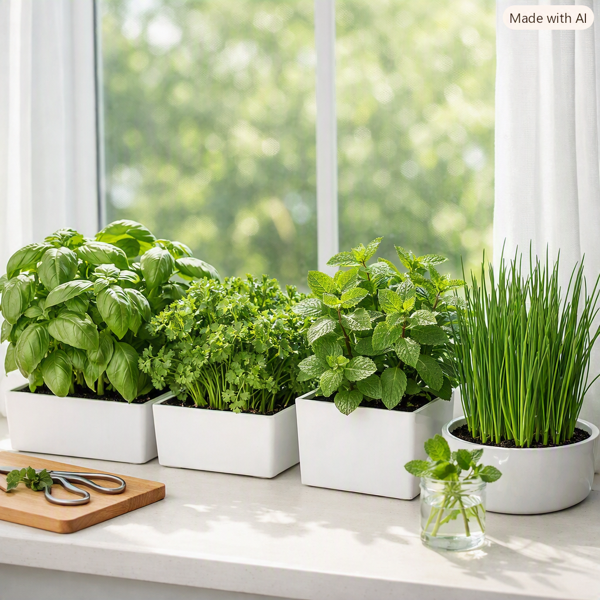

Why Grow Herbs Indoors?
Indoor herbs are perfect for small spaces, year-round growing, and easy access while cooking. They thrive in pots, require minimal care, and add greenery to your home.
Indoor herbs bring fresh flavour straight to your kitchen windowsill. They’re compact, fragrant, and surprisingly easy to grow with the right light and watering routine.

Indoor herbs are perfect for small spaces, year-round growing, and easy access while cooking. They thrive in pots, require minimal care, and add greenery to your home.
These herbs adapt well to indoor conditions and stay productive with simple care.
Basil loves warmth and bright light. Keep it near a sunny window and pinch the tips to encourage bushy growth.
Slow to start but very productive once established. Curly and flat-leaf varieties both grow well indoors.
One of the easiest indoor herbs. Cut the leaves and they regrow quickly.
Vigorous and aromatic. Keep mint in its own pot to prevent it from spreading too much.
Indoor herbs stay healthy with the right balance of light, water, and airflow. These simple tips keep your plants thriving.
Herbs dislike soggy soil. Use pots with holes and a saucer to catch excess water.
Turning pots weekly helps herbs grow evenly and prevents leaning toward the light.
Frequent harvesting encourages fresh growth and keeps herbs compact.
A light, airy potting mix prevents waterlogging and supports healthy roots.